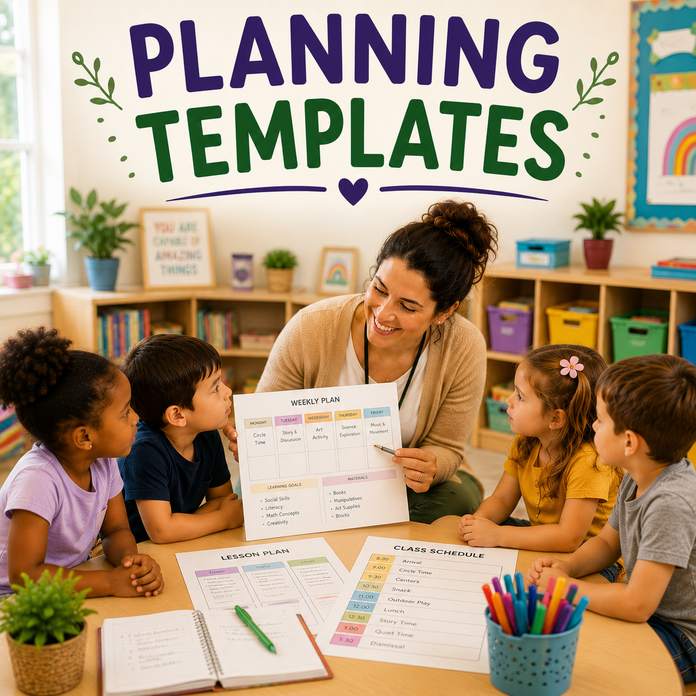

Plan & prepare
Planning and Curriculum Support
Build intentional plans, organize routines, connect activities to developmental goals, and adapt experiences for different ages and needs.
- Weekly planning and lesson templates
- Classroom schedules and routines
- ELOF-informed activity ideas